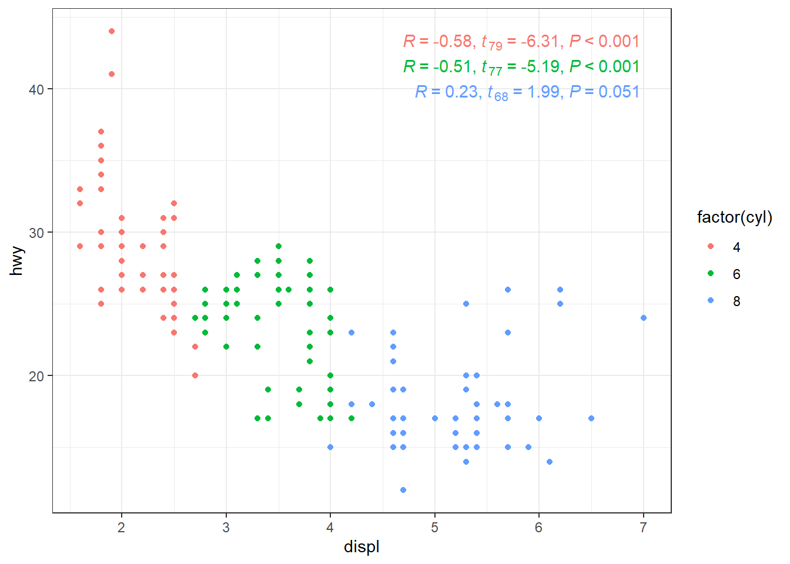
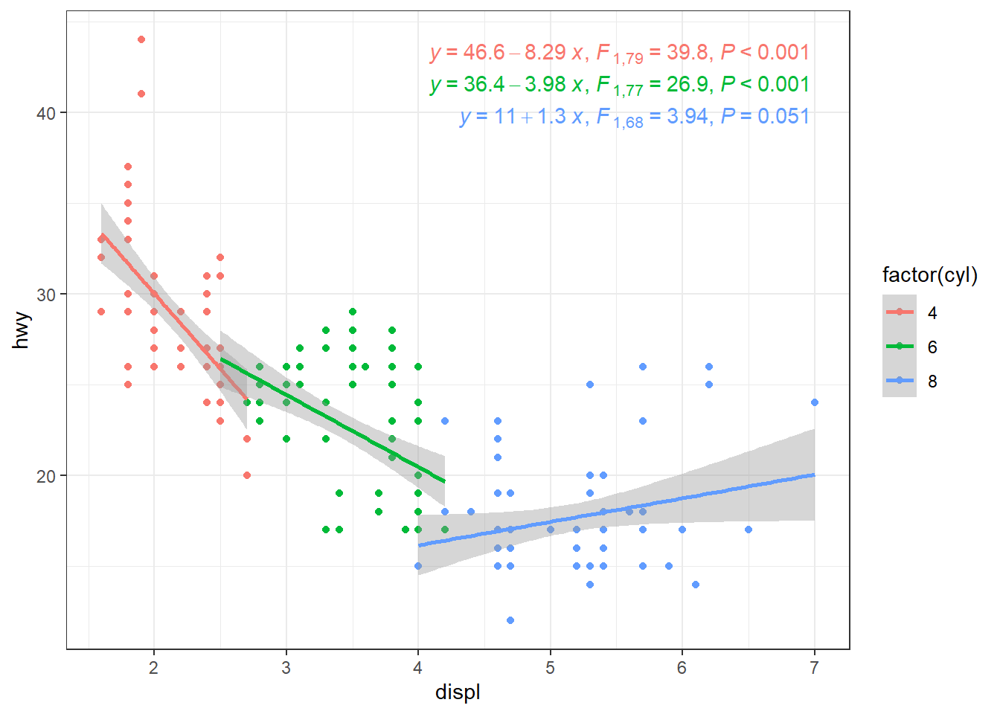
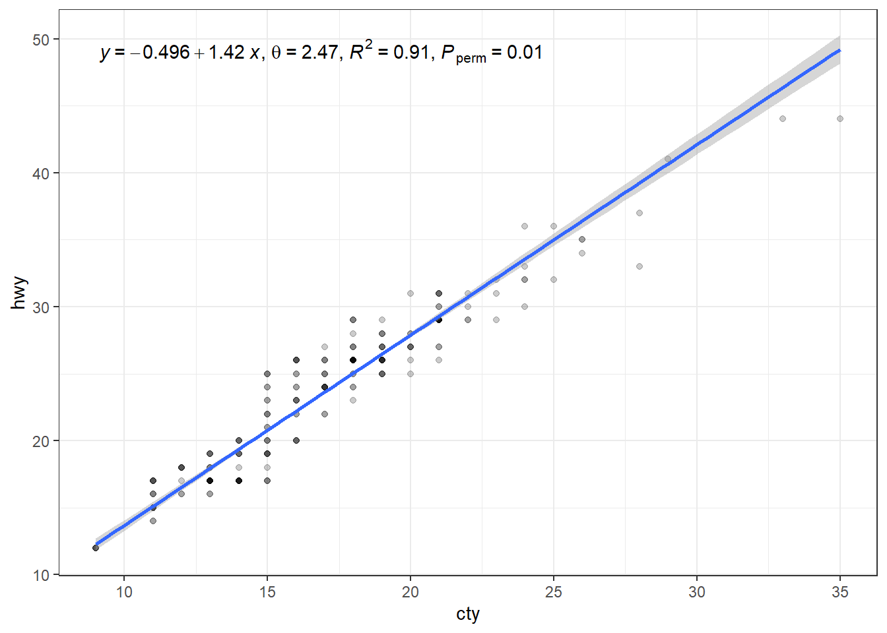

library(ggpmisc)Version 0.5.0 (previously announced as 0.4.8) brings enhancements to the annotations based on model fits. The most significant change for all users is the new convenience function use_label() that greatly simplifies the assembly of labels from components and their mapping to aesthetics. We examplify its use and some of the other new features. It also contains two changes that are not backwards compatible and that can in isolated cases break existing code (hence the version-number change into 0.5.0).
In the first plot we add an estimate of the correlation coeficient R, and the corresponding t-value and P-value.
ggplot(subset(mpg, cyl != 5), aes(displ, hwy, colour = factor(cyl))) +
geom_point() +
stat_correlation(use_label(c("R", "t", "P")),
label.x = "right") +
theme_bw()
The displacement volume of car engines is known without error and it can the thought as a possible explanation for the petrol use per distance (MPG or miles per gallon) for hiway driving. We fit a linear regression, and annotate the plot with the fitted linear model equations, the F-values and P-values.
ggplot(subset(mpg, cyl != 5), aes(displ, hwy, colour = factor(cyl))) +
geom_point() +
stat_poly_line() +
stat_poly_eq(use_label(c("eq", "F", "P")),
label.x = "right") +
theme_bw()
In the case of the petrol use (MPG) in city traffic compared to highway travel the two variables can be expected to be subject to similar error variation and there is no directional cause-effect relationship between them. So, in this case OLS linear regression is not a suitable approach. We use major axis regression instead, and we add to the label, θ, the angle in degrees between the two lines that could have been fitted by linear regression using x or y as the explanaroty variable.
ggplot(subset(mpg, cyl != 5), aes(cty, hwy)) +
geom_point(alpha = 0.2) +
stat_ma_line() +
stat_ma_eq(use_label(c("eq", "theta", "R2", "P"))) +
theme_bw()
-
Differently to the use in the R literature
mfhas been used in this package, instead offm, to signify fitted model. This was changed in this version as formal parametermf.valueshas been renamedfm.valuesand variablemf_tbin values returned by statistics renamedfm.value. Although these are code breaking changes, they are likely to cause difficulties only in isolated cases as defaults rarely need to be overridden. -
Add function
use_label()that greatly simplifies assembling and mapping combined labels from the values returned bystat_poly_eq(),stat_ma_eq(),stat_quant_eq()andstat_correlation(). -
Add variables
fm.tb.type,fm.class,fm.method, andfm.formula.chrto the data returned bystat_fit_tb(), and renamemf_tbintofm.tbfor naming consistency. -
Add variables
fm.class,fm.method, andfm.formula.chrto the data returned by all other statistics based on model fitting. -
Add confidence intervals for R (Pearson’s OLS correlation), τ (Kendall’s rank correlation) and ρ (Spearman’s rank correlation) to the values and labels returned by
stat_correlation(). In the case ofmethod = "pearson"assuming Normal distribution or estimated by bootstrap. Formethod = "kendall"andmethod = "spearman"only bootstrap estimates. These are implemented using package ‘confintr’. -
Add confidence interval for R2 to the values and labels returned by
stat_poly_eq()(implemented using package ‘confintr’). -
Add θ (theta) to the values and labels returned by
stat_ma_eq(). -
Add
method.labelto the data returned bystat_correlation(),stat_poly_eq(),stat_ma_eq()andstat_quant_eq(). -
Add functions
keep_tidy(),keep_glance()andkeep_augment()as wrappers on methodstidy(),glance()andaugment()from package ‘broom’. These new functions make it possible to keep a trace of the origin of the “broom-tidied” outputs. [These three functions should be considered experimental, and may be modfied or not vailable in future versions.] - Update documentation and user guide Model-Based Plot Annotations.
Documentation web site at http://docs.r4photobiology.info/ggpmisc/ includes all help pages, with output from all examples, vignettes as well as a changelog in HTML format.
NOTE: Version 0.5.0 has been submitted to CRAN.
Please raise issues concerning bugs or enhancements to this package through GitHub https://github.com/aphalo/ggpmisc/issues